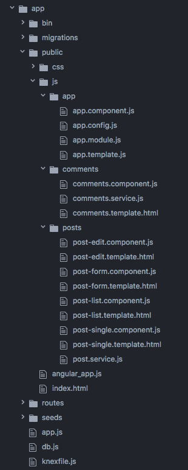

Overview
Reddit Clone is an Angular 1.6 CRUD (create, read, update, delete) Node.js Express application. This is a week-long individual assignment from the Angular unit of Galvanize's 24-week web development immersion course. The database is seeded
and queried using Knex.js.
View Live
View Code
Seperation of Concerns In Angular
Learning how to structure an AngularJS application was one of my biggest takeaways from this project.

The application architecture is compartmentalized by component type (e.g. the post components), rather than by services, controllers and templates. This places related content together, making it easier to find a component's associated
service and template.
The comments component displays post comments to the view. On initialization, the comments component renders the comments template with content retreived using the comment service function getComments(). When the comments component's updateComments()
function is called in the comments template, it uses the comment service functions getComments() and addComment() to add the user's new comment to the database and render the updated comments.
Any functions that make requests to query the database are seperated out into the comments service. Here getComments() retreives the comments currently in the database, while addComments() inserts a new comment into the database. The service
also stores the comments retreived from the most recent database query. This allows multiple components to receive the same data from a single source of truth (eg. in posts, where the post-edit, post-form, post-list and post-single
components alll draw on the post service to obtain current data).
The comments template uses two-way data binding to render a live view of the comments. If the user submits a new comment, the controller's updateComments() function is called. This updates the comments in the database to include the new
comment, and the results are immediately reflected in the view.